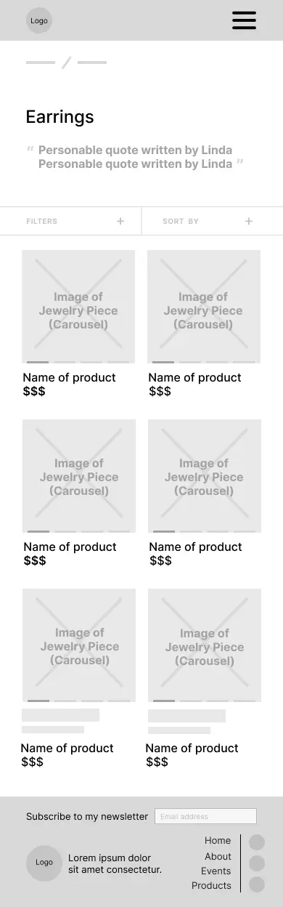

Jewels by the Sea
UX DESIGN / RESEARCH / BRANDING
In today's day and age where a heavy emphasis is placed on technology, a good website is crucial for the success of a business. Websites, more often than not, are ways of staying connected to a business and may even be someone's first impression of the business. A good website with strong branding can build trust with the customer while simultaneously forming a connection. Good websites, especially for small businesses with little resources, are hard to come by. Thus, we decided to reach out to a small business with a sole owner, Linda Jalving, to redesign her website and help her express herself online.
User Research
After gaining an understanding of Jewels by the Sea's expectations, we moved on to understanding the shop's demographic and who they cater to.
User Interviews
We wanted to target regulars of Jewels by the Sea as well as potential shoppers who may want to stop by. Thus, we had Linda provide us with contact information of some of her regulars and interviewed pedestrians around the shop. We obtained a total of 10 interviewees – 4 regular customers and 6 people around the area.
Personas
From our insights, we came up with 3 user personas: the regular gift shopper, tourist, and potential shopper.


Competitive Analysis
After gathering user data and empathizing with our audience, we conducted a competitive analysis to gain inspiration.
The businesses we chose to analyze were Bulgari, Swarovski, Gorjana, Krasner Jewelers, and David & Sons. We chose these because we wanted a mix of jewelry businesses that are local to San Diego as well as household names.
The main characteristics we considered during our analyses were branding, functionality, site architecture, & content. Listed below are our bottom line takeaways.
Brand
- Simple, clean logos that reflects the brand’s identity are the most prevalent.
- Large, detailed images are more effective than words when it comes to communicating the brand’s mood.
Content
- Information about the jewelry, history, and credentials about the brand should be present.
Functionality
- There should be a way to categorize jewelry.
- Give users freedom with how they filter items, especially when refining by price.
- Too many categorization options may be overwhelming for the user, so keep it simple.
Site Architecture
- Start broad (bracelets, necklaces, etc.), then allow the user to be more specific.
- Incorporate clickable images in the desktop dropdown for less text-heavy navigation bars.
- Having contact info as links saves users time.
Design
Jewels by the Sea expressed that they wanted to keep their current logo, so we explored how we could expand on their current brand and more concretely define their identity.
Mood Board
Before tackling visuals or prototypes, we also created a mood board to map out the look and feel of the brand. Our client expressed that she would like to keep her current logo, so we explored color schemes and brand terms that were consistent with the current brand.
Site map
The last thing we did before making pages was create a site map. This allowed us to determine what pages we need as well as how everything connects to one another.
Wireframes
We created wireframes without visual elements or content incorporated to start playing around with layouts and determine what content we need to request from our client.
We practiced mobile first design, so wireframes were created for mobile viewports.
Home
About
Events

Products
Design System
Before incorporating visual elements, we established a design system to ensure consistency across pages and create one cohesive product.
We went for a minimalistic color palette with different shades of blue that compliment Jewels by the Sea's current colors.
We experimented with typefaces and settled on a font pairing that complimented one another. We went with an elegant serif font and paired it with a readable sans serif font.
Final Designs
After countless rounds of ideating and user testing, we produced our final prototypes with content and visual elements incorporated.
Homepage
We made an e-commerce style homepage that allows customers to explore by category as well as collection and included testimonials and values to establish credibility with the business.
We also added a section to the top of the screen that allows customers to easily find when and where Jewels by the Sea will be tabling next.
About Page
We made the about page as personable as possible through the use of first person language and imagery.
We also further established credibility by talking about Linda's background and tying it into her credentials.
Events Page
The events page allows users to see when and where Jewels by the Sea will be tabling next. It also serves to briefly explain her new business model and, when locations are clicked on, provides directions on how to get to the market.
Products Home Page
We wanted to have a page where customers can view all the products at once, but were worried about how long the page was and wanted to allow the user to see where they are on the page.
So we added a bar that's sticky to the top of the screen and allows the user to jump in between sections as well as keep track of where they are on the page.

Products Category Page
We created pages for multiple categories of jewelry and included a functional filtering feature that allows users to sort by material, price, color, and more.
Checkout Process
Since our client wanted to have the option of selling online, we planned out and created screens for the checkout process.

Next Steps
The client was overjoyed by our final designs and plans to move forward with it when ready.
She has expressed interest in bringing me on board for the implementation process which may begin in mid-August.
Thus, next steps involve researching possible e-commerce platforms to host the site.
Takeaways
Responsive Clients are Good Clients
More often than not, clients disappoint when it comes to providing imagery, content, or other artifacts for the site. We were extremely lucky to have such a cooperative and responsive client that was so willing to work with us.
Be Realistic
There were many things that we wanted to accomplish, but couldn't do in the given time frame. We had to sit down, be realistic with ourselves, and plan everything we wanted to get done. This allowed us to do a good job on a few features rather than rush many features.
Be Transparent
In the beginning, our client expected a lot from us, and so did we; however, as the project went on, we realized time was an issue. We practiced transparency and clearly communicated what we could and couldn't get done. This led to a final product that everyone was satisfied with.